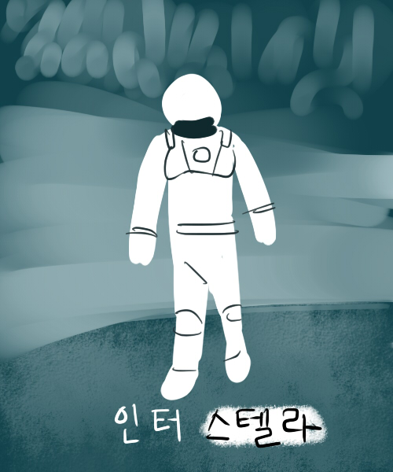

|  | 제목 : 인터스텔라 | 감독 : 크리스토퍼 놀런 |
| ▶작품 소개 지난 20세기에 범한 잘못이 전 세계적인 식량 부족을 불러왔고, NASA도 해체되었다. 이때 시공간에 불가사의한 틈이 열리고, 남은 자들에게는 이 곳을 탐험해 인류를 구해야 하는 임무가 지워진다. |
||
| ▶제작자 리뷰 주인공이 너무 불쌍하다... |
||
| 제작자 평점 ★★★★☆(8) | 관람객 평점 ★★★★★(9.11) | 평론가 평점 ★★★★☆(7.90) |
| 장르 : #SF #감동 #재난 | ||